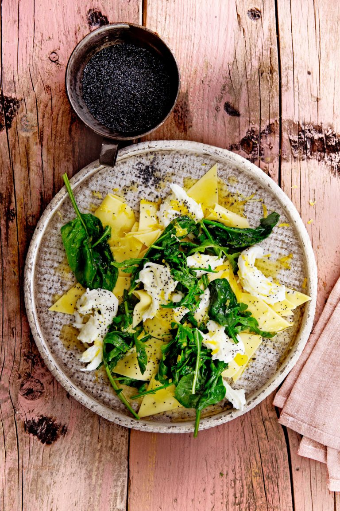

Pasta met spinazie, mozzarella en citroenboter

Ingredienten
- 500 g koelverse lasagne
- 1 citroen
- 500 g spinazie
- 200 g rucola
- 4 bollen buffelmozzarella à 125 g, uitgelekt en op kamertemperatuur
- 1 el maanzaad
Bereiding
- Neem de lasagnebladen uit de verpakking en snijd de gestapelde vellen in de lengte in 3 repen. Snijd de repen vervolgens in schuine stukjes van 3-4 cm. Snijd de knoflook fijn.
- Breng in een pan ruim water met zout aan de kook. Smelt 75 g boter in een steelpan. Boen de citroen schoon en rasp de gele schil boven de gesmolten boter.
- Voeg de pastastukjes toe aan het kookwater en kook ze in 4 min. beetgaar, roer regelmatig om. Smelt 25 g boter in een koekenpan. Fruit de knoflook 1 min. Schep de spinazie en rucola erdoor en laat kort slinken.
- Giet de pasta af, schep in de pan om met de helft van de citroenboter en verdeel over 4 borden. Verdeel de bladgroente en dan mozzarella over de pasta. Schenk de rest van de citroenboter erover en bestrooi met het maanzaad en zout en peper naar smaak.